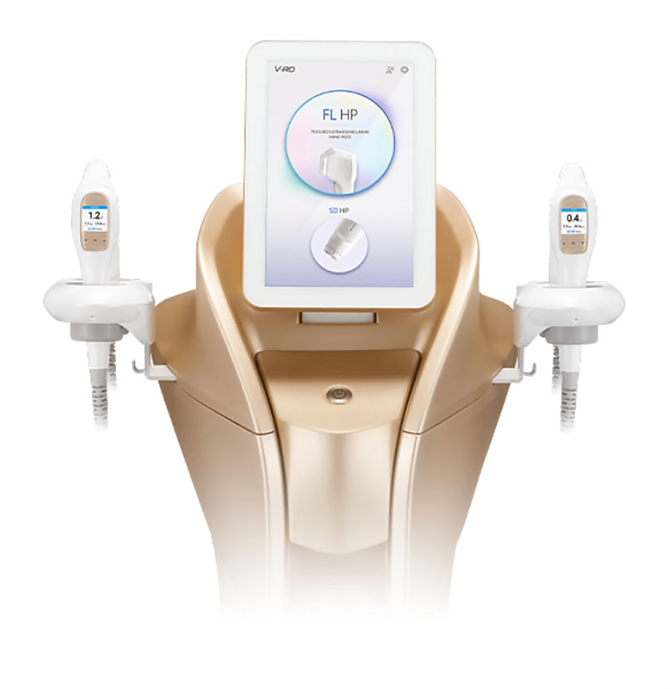
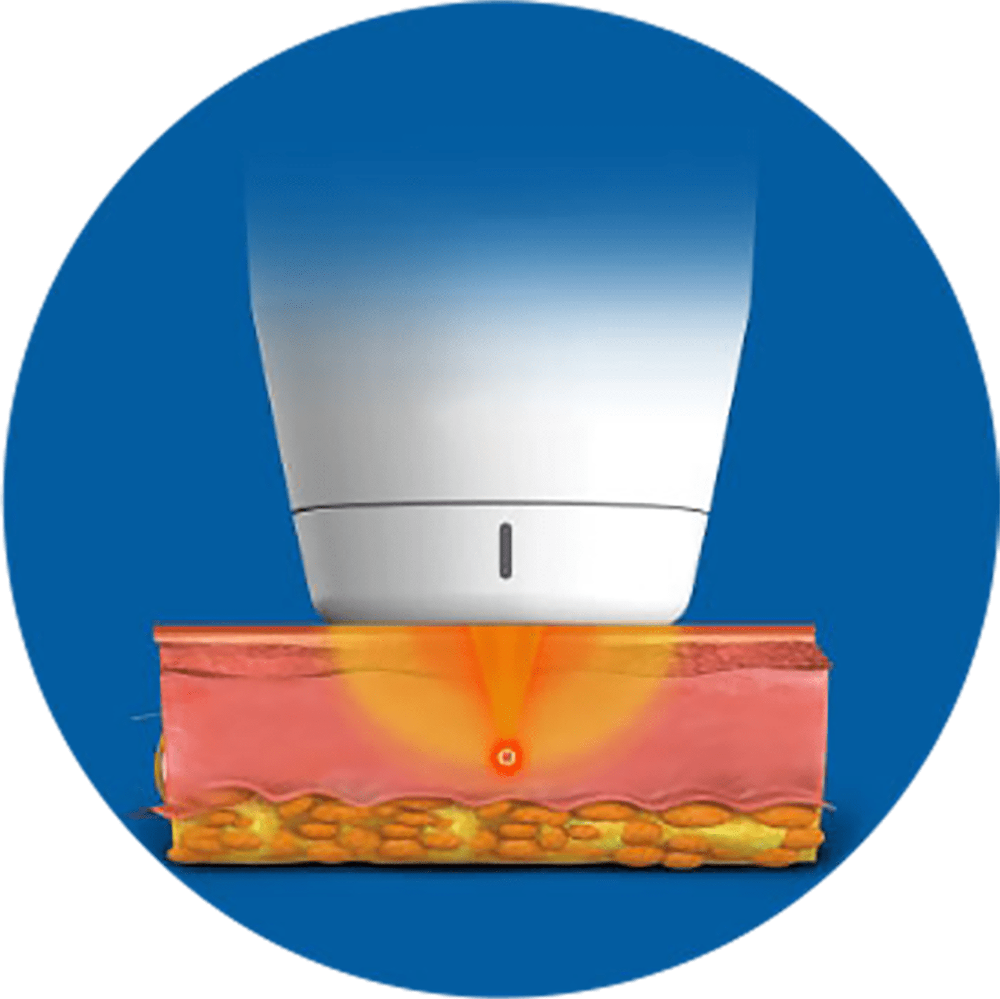
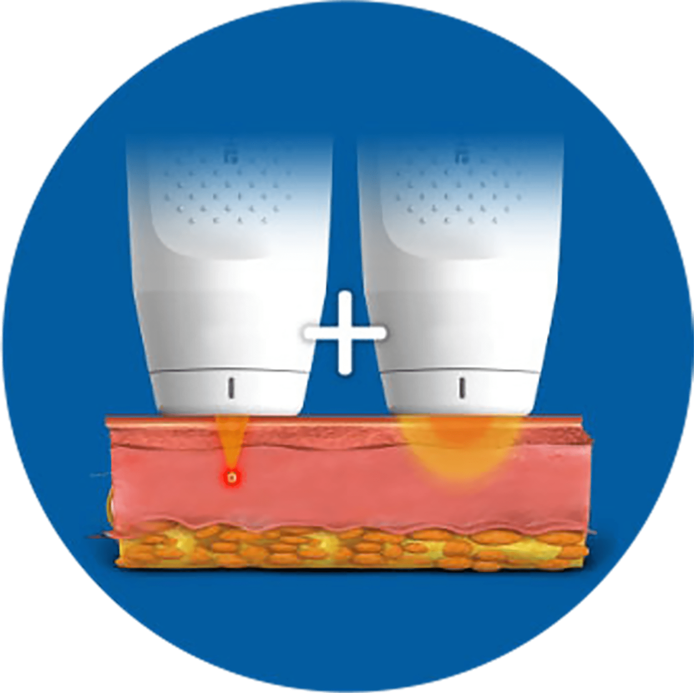
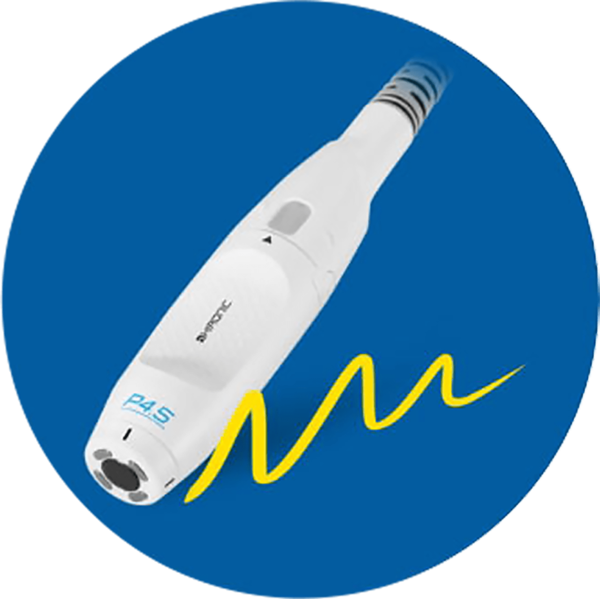
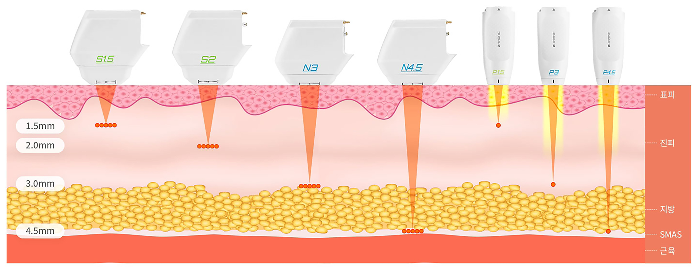
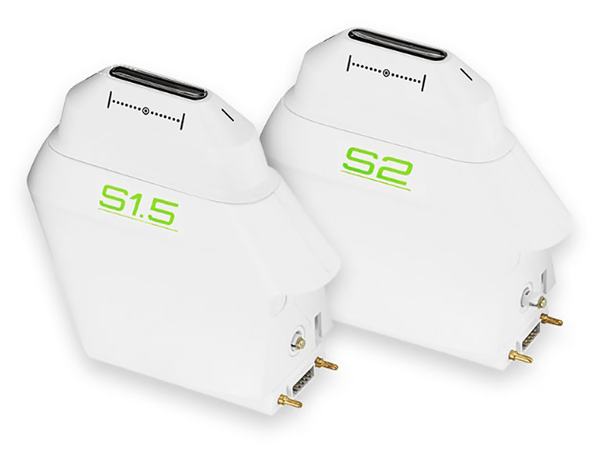

나를 위한 브이로 리프팅
나를위한 산부인과의
“브이로 리프팅”
은
의료진의 노하우와 기술력으로
전문의의 손끝에서 시작되는
마법 같은 페이스 리프팅을 경험하실 수 있는 시술입니다
- 시술시간 20분 내외
-
회복기간
시술 후
일상생활 가능 - 입원여부 없음
- 마취방법 수면마취 가능
- 시술횟수 제한 없음
나를위한 브이로 리프팅

진피층, SMAS층 등 다양한 피부층에 미세한 열 응고 구역을
다수 생성시킨 후
열 에너지를 이용하여 재생 및 회복 작용을
이용하는 눈썹 리프팅 장비입니다.
-
초음파, 고주파
동시 조사 - 피부 탄력 개선
- 통증, 부기 최소화
- 일상생활 바로 가능
브이로 특장점
-

눈썹 리프팅과
통증 완화의
시너지 효과를
기대할 수 있습니다. 고주파 : 통증 완화 / 집속 초음파 : 눈썹 리프팅 -

두 가지 원리의
시술을 교차함으로써
시술을 단축 시킬 수
있습니다. -

펜 타입 핸드피스로
좁고 굴곡진 부위 시술 이
용이합니다.

진피층, SMAS층 등 다양한 피부층에 열 응고점을 형성시켜
개인마다 다른 피부 두께를 고려하여 피부층에 따라
맞춤형 시술이 가능합니다.
FL(Focused Linear) 카트리지 : 4종
/ SD(Synergy Dotting) 카트리지 : 3종

기존 장비(doublo) 카트리지 대비
40% 슬림해진
브이로 Slim Type 카트리지
시술자의 시야각이 넓어져서 꼼꼼하고 섬세한 시술이 가능합니다.
브이로 PROCESS
-
맞춤
상담 -
자가
세안 -
레이저
시술 - 마무리
브이로 대상자
-
HIFU와 RF를 한 번의 시술로 받고 싶으신 분
-
좁고 굴곡진 부위에 섬세한 시술을 원하시는 분
-
피부층에 따라 맞춤형 시술을 받고 싶으신 분
-
일상생활이 바로 가능한 시술이 필요하신 분
-
통증 완화된 시술을 받고 싶으신분
Q & A
-
시술 시 통증이 어느 정도인가요?
개인마다 느끼는 통증 강도의 차이는 있으나,
고주파 에너지가
통증 완화에 도움을 주기 때문에
비교적 적은 통증으로 시술을
받을 수 있습니다. -
일상생활에는 지장이 없나요?
비 수술적 방식으로 시술 직 후 일상생활이 바로
가능합니다.
또한 브이로만의 특허 받은 안전 센서
2종으로 화상을 방지하기
때문에 안전한 시술입니다.
브이로 시술 후 주의사항
시술 후 주의 사항은 개인 차가 있을 수 있습니다.-
01
대부분의 시술과 마찬가지로 시술 받으실 때마다 매번 효과가
동일할 수는 없는 점 양해 부탁드립니다. -
02
시술 후 개인 차에 따라 붉은 기 / 부기 / 미약한 통증 등이
발생할 수 있으나 일시적입니다. -
03
시술 후 메이크업은 바로 가능하며, 외출 시 선크림을 사용해야
합니다.